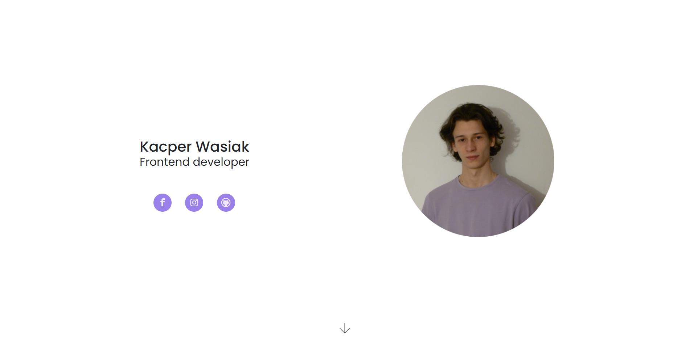
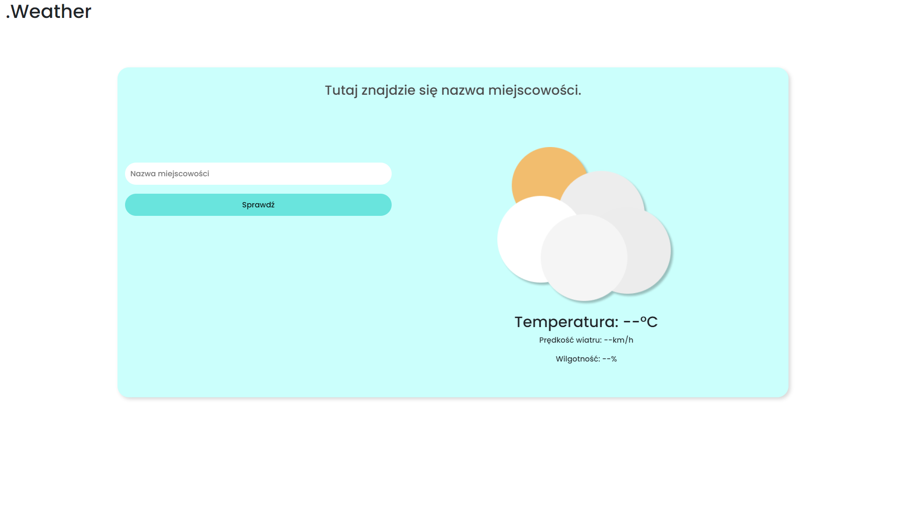
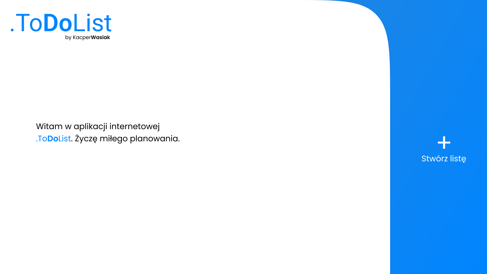

Strona portfolio została stworzona za pomocą HTML, CSS oraz JS, a zaprojektowana w Figmie. Strona ma na celu w prosty sposób przedstawić moje projekty.

.Weather to aplikacja pogodowa wyświetlająca dane pogodowe dla danej miejscowości. Stworzona za pomocą HTML, CSS, JS oraz API od Openweather. Projekt strony został wykonany w Figmie. Strona korzysta z frameworka Bootstrap.

.ToDoList to aplikacja do planowania zadań. Stworzona za pomocą HTML, CSS i JS. Została zaprojektowana w FIgmie. Strona używa frameworka Bootstrap.
Nazywam się Kacper mam 19 lat. Jestem uczniem 5 klasy technikum informatycznego. Programowaniem zajmuję się od drugiej połowy 2022 roku.
Interesuję się piłką siatkową w którą gram od 2021 roku oraz grą na gitarze.
Moją naukę programowania rozpocząłem od nauki HTML i CSS, następnie opanowałem framework Bootstrap i język JavaScript. Teraz zaczynam naukę Reacta oraz GIT-a.